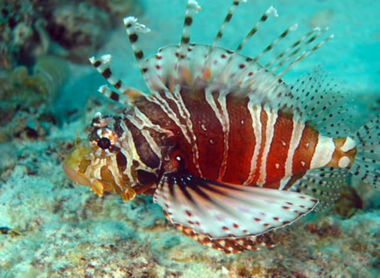
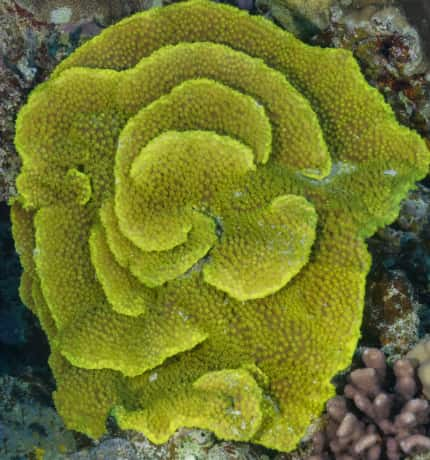

Explore Marine Life Categories

Coral Reef Fish

Open Ocean & Pelagic Fish

Coral Species

Crustaceans & Mollusks
Shells & Sea Slugs

Marine Turtles

Marine Mammals

Sharks and Rays
Echinoderm

Cnidarians
Coral Reef Fish
Mauritius is surrounded by vibrant coral reefs that are home to a wide variety of colorful reef fish. These fish play a crucial role in maintaining the balance of the marine ecosyste
🪸 Importance of Coral Reef Fish:
🫧Maintain the balance of coral reef ecosystems.
🫧 Help control algae growth on reefs.
🫧Are indicators of reef health.
🫧Support tourism and snorkeling activities in Mauritius.
Clown Fish

The Mauritian clownfish, scientifically known as Amphiprion chrysogaster, is endemic to Mauritius and Réunion Island. It features a dark brown to black body with distinctive white stripes and typically lives in symbiosis with various sea anemones, contributing to its unique ecological role in the region. This species is known for its peaceful nature and can live up to 15 years in captivity. The Mauritian clownfish is carnivorous, feeding on small organisms found in its anemone habitat. In terms of reproduction, it is oviparous, with both parents taking an active role in caring for the eggs. For aquarium enthusiasts, maintaining proper water conditions and providing a varied diet are essential for the health and longevity of this vibrant fish.
Parrot Fish

Parrotfish are a vibrant and important part of the marine ecosystem around Mauritius. These fish are known for their bright colors and distinctive beak-like teeth, which they use to scrape algae and coral. By feeding on the algae that grow on coral reefs, parrotfish help maintain the health and balance of coral ecosystems. Their grazing also produces significant amounts of sand, contributing to the sandy beaches Mauritius is famous for. Mauritius, located in the Indian Ocean, hosts several species of parrotfish that inhabit its coral reefs. These fish play a crucial role in reef resilience and biodiversity, making them a key species for marine conservation in the region. If you are interested in seeing parrotfish around Mauritius, popular snorkeling and diving spots near the coral reefs often provide excellent opportunities to observe them in their natural habitat.
Mauritius hosts a diverse range of butterflyfish species that are notable for their vibrant colors and distinctive patterns. These fish are commonly found around coral reefs and play important roles in the reef ecosystem, often feeding on coral polyps and small invertebrates.Butterflyfish in Mauritius contribute to the rich marine biodiversity and are key species for reef health. Their graceful swimming and vibrant colors make them a favorite among divers and underwater photographers exploring the island’s coral reefs.

Angelfish are a notable part of the diverse marine life around Mauritius, adding vibrant colors and interesting behaviors to the island’s coral reef ecosystems. Several species of marine angelfish inhabit the waters near Mauritius, many of which belong to the genus Centropyge. These angelfish are popular both among snorkelers and aquarium enthusiasts due to their striking appearance and manageable size.Mauritian angelfish thus represent both an ecological treasure in their natural reef habitats and a favorite among saltwater aquarium hobbyists

Lionfish are present in the waters around Mauritius and are known for their striking appearance and voracious predatory behavior. The most common lionfish species found in Mauritius is the Indian lionfish (Pterois miles), which is also one of the largest members of the lionfish family.
Open Ocean & Pelagic Fish

Mauritius is renowned for its vibrant marine biodiversity, especially when it comes to open ocean and pelagic fish species. Thanks to its location in the warm Indian Ocean and proximity to deep waters just offshore, Mauritius offers excellent habitats for a variety of large pelagic fish. These species are highly prized by anglers and contribute significantly to the island’s thriving sport fishing and marine tourism industries.
Blue marlin

Blue marlin is one of the most prized big game fish found in the waters around Mauritius, making the island a world-renowned destination for sport fishing enthusiasts.Blue marlin are usually found in warm, offshore waters and tend to follow hot ocean currents around Mauritius. They favor deep waters where they hunt for large prey such as tuna and other pelagic fish.
Yellowfin Tuna

Yellowfin tuna (Thunnus albacares) is a highly prized pelagic fish found in the waters surrounding Mauritius, attracting both commercial fisheries and sport fishing enthusiasts due to its size, strength, and culinary value.Yellowfin tuna in Mauritius are caught by a variety of methods including trolling, live bait fishing, and jigging. Sport fishermen prize them for their fast runs and strong fights.
Dorado
The Dorado, also known as Mahi-Mahi or Dolphinfish (Coryphaena hippurus), is a vibrant and highly sought-after game fish in the waters around Mauritius. Known for its striking colors—bright blues, greens, and golds—and impressive acrobatic leaps when hooked, Dorado is a favorite among sport fishermen.
Coral species
🪸🌊Mauritius is home to over 160 coral species, making its reefs some of the most diverse in the Western Indian Ocean.
Brain coral

Brain corals are a distinctive and important part of the coral reef ecosystems around Mauritius. Named for their grooved, labyrinth-like surface that resembles the folds of a human brain, brain corals contribute significantly to reef structure and biodiversity.
Turbinaria
Turbinaria corals are an important genus of stony, reef-building corals found in many tropical marine environments, including the waters around Mauritius. These corals contribute significantly to the structure and biodiversity of the island’s coral reefs.